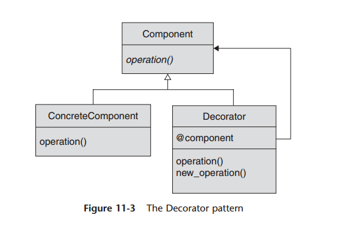

Decorator pattern
The Decorator pattern is a straightforward technique that you can use to assemble
exactly the functionality that you need at runtime. It offers an alternative to creating
a monolithic “kitchen sink” object that supports every possible feature or a whole forest
of classes and subclasses to cover every possible combination of features. Instead, with
the Decorator pattern, you create one class that covers the basic functionality and a set
of decorators to go with it. Each decorator supports the same core interface, but adds
its own twist on that interface. The key implementation idea of the Decorator pattern
is that the decorators are essentially shells: Each takes in a method call, adds its own
special twist, and passes the call on to the next component in line. That next component
may be another decorator, which adds yet another twist, or it may be the final,
real object, which actually completes the basic request.
The Decorator pattern lets you start with some basic functionality and layer on
extra features, one decorator at a time. Because the Decorator pattern builds these layers
at runtime, you are free to construct whatever combination you need, at runtime.
